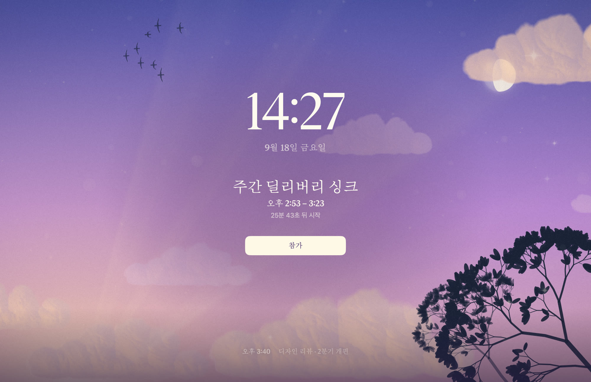

macOS 15.2 이상 · 메뉴 막대 앱 · 네트워크 미사용
회의를 놓치지 않게,
화면을 통째로 덮습니다
다른 앱이 전체 화면이든, 다른 Space에 있든 그 위에 뜹니다. 닫기 전에는 안 사라집니다.
지금 보고 있는 이 배경이 그 화면입니다. 커서를 움직여 보세요화면을 문질러 보세요 — 먼지가 밀려났다 돌아옵니다.
덮인 화면은 Esc 한 번이면 사라집니다. 이 페이지도 그렇게 만들었습니다.
방금 그것이 회의 시작 전에 뜹니다. 하루에 몇 번씩.
themes · 만지면 페이지 전체가 갈아입습니다
하루에 몇 번씩 보는 화면입니다
배경은 두 층입니다. 구워 둔 그림 위에 매 프레임 계산되는 층이 얹히고, 둘은 같은 카메라를 봅니다. 그래서 커서를 움직이면 층이 시차로 갈라지고, 먼지가 바람에 밀려났다 되돌아옵니다.
남은 시간은 색이 말합니다
레이어 구조는 그대로 두고 그라디언트 색만 0.7초에 걸쳐 갈아입습니다⌃⌥⌘U · 대기 화면
알림이 없을 때도 같은 배경에
큰 시계와 다음 회의
자리를 비울 때 화면을 덮고, 돌아왔을 때 다음 회의가 바로 보입니다. 위아래 방향키나 스크롤로 뒤의 회의를 넘겨 보세요. 화면 오른쪽의 점이 지금 몇 번째 칸인지 말합니다.

이 시계는 지금 당신의 시계입니다. 회의는 방문 시각 기준으로 만든 가상의 일정이고 제목은 전부 가명입니다. 키캡을 누르거나, 스테이지를 누르고 ↑ ↓ 를 쓰세요 — 브라우저가 단축키를 먼저 먹는 경우가 있어 화면의 키캡이 같은 일을 합니다.
F2 · 제외 조건표 8행
무엇을 안 띄울지가 이 앱의 절반입니다
취소된 일정, 종일 일정, 내가 거절한 일정, 4시간 넘는 장시간 일정, 이미 끝난 일정은 기본값으로 안 띄웁니다. “컨퍼런스 월~수” 같은 일정이 앱을 켤 때마다 화면을 덮으면 안 되니까요.
위에서부터 평가하고 하나라도 걸리면 제외합니다. 스위치를 내리면 그 조건이 꺼지고, 걸려 있던 일정은 즉시 아래로 계속 떨어집니다.
통과한 것만 이 화면에 모입니다. 같은 시각에 시작하는 회의는 한 화면에 합쳐집니다 — 화면이 세 번 연속 덮이지 않도록.
layers · 분해도
층을 하나씩 꺼 보세요
하늘 → 테마 장면 → 살아 있는 층 → 등장 번쩍임 → 글자 뒤 주머니 → 그레인·비네트 → 글자. 세 테마가 같은 순서로 쌓입니다. 대비비는 글자 뒤 배경 픽셀을 실제로 읽어 계산합니다.
proof · 선언이 아니라 측정
아무 데도 보내지 않고,
왜 안 띄웠는지 말합니다
캘린더를 읽기만 하고 아무 데도 보내지 않습니다. 분석도, 크래시 리포팅도, 업데이트 체크도 없습니다. “왜 안 떴지”를 추측하지 않아도 됩니다 — 안 뜬 이유가 조건 번호와 함께 적혀 있습니다.
줄을 누르면 그게 무슨 뜻인지 여기 적힙니다. 회의 제목과 캘린더 이름은 가명입니다.
샌드박스를 끄면 엔타이틀먼트는 아무 제약도 하지 않습니다. 그래서 네트워크 미사용은 코드 규율과 이 두 명령의 실측으로만 담보한다고 사양에 적어 뒀습니다.
install · 숨기지 않고 먼저 말합니다
5분 걸립니다. 한 번만.
Apple 공증을 받지 않았습니다. 개발자 프로그램(연 $99)에 가입하지 않고 만들었고, 아는 사람에게만 나눠주는 앱이라 가입하지 않았습니다. 대신 서명은 고정된 인증서로 확실히 합니다 — 업데이트해도 캘린더 권한을 다시 주지 않아도 됩니다.
조심할 것은 하나입니다. 경고 창의 파란 기본 버튼이 「휴지통으로 이동」입니다. 안내 없이 Return 을 누르면 앱이 삭제됩니다.
언틸리티UNTILLITY
탈출구는 항상 있습니다.
이 저장소는 코드보다 판단의 기록이 많습니다.